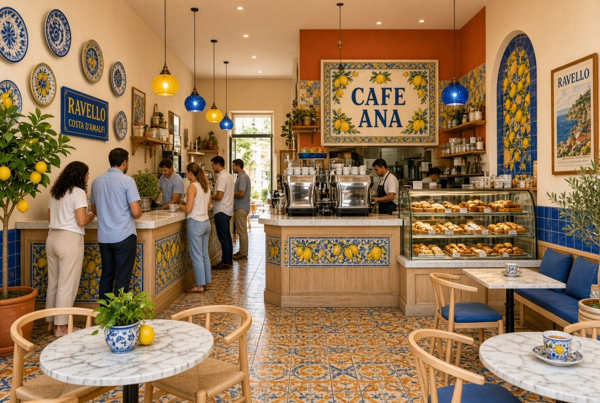

An Italian bar for Dunedin
Un vero bar italiano
A genuine Italian caffè in Dunedin, Florida - Italian bar culture done properly rather than diluted into an American coffee shop. Espresso is the common denominator, the stand-up counter matters as much as the seated room, and the day ends the way an Italian day ends, with a glass of something at the bar. The name is still open; the concept is not.
Espresso is the common denominator

In Italy the bar is a civic institution rather than a coffee retailer. It opens before work and closes after the evening passeggiata, and across that whole day one thing does not change: someone is making espresso at the counter. Everything else - the cornetto in the morning, the tramezzino at midday, the glass of wine at six - orbits that single constant.
That is what lets one small room work three different ways without becoming three different businesses. The machine, the counter and the person behind it are the fixed point. The offer around them changes by the hour.
The banco and the tavolino
The stand-up bar is not a queue for the seats. It is the venue. Most coffee in Italy is drunk standing at the banco: ordered, made, drunk and paid for in a few minutes, often without a word wasted. It is not a lesser experience than sitting down - for an Italian it is the normal one, and it is the detail American imitations almost always miss.
So the room is planned around two service modes of equal standing, sharing one machine and one barista:
- Al banco - a real stand-up counter with a proper foot rail and elbow room, for the guest who wants an espresso the way it is taken in Italy. Fast, unhurried in manner but brief in fact, and the highest-turnover surface in the room.
- Al tavolino - small two-top tables with Italian motifs, real ceramic cups and saucers, for the guest who wants to sit with a cappuccino and a pastry. Slower, warmer, and the reason someone brings a friend.
Italian bars have long priced these two differently, and the distinction is honest rather than sharp: sitting down buys service and a table. Whether we carry that across is an open question, and one we would value a view on.
The room
Italian tile. Curated photography and posters that celebrate the roaster partners by name, so the walls carry provenance rather than decoration. Ceramic, not paper, for anyone drinking in. A visible pastry case. A small footprint kept deliberately simple, because complexity in a room this size is paid for twice.
Food is sourced, not produced. Cornetti, tramezzini, biscotti, from local bakers. No kitchen, no line cooks, no hood. It keeps the build, the licence and the daily operation as light as they can be, and it lets the coffee remain the thing the place is judged on.
The day
- Morning is the strongest part of the concept. This is the daypart Italian bar culture is actually built around, and the one the format serves best - espresso, cornetto, standing, gone. It is where the room earns its character and its regulars.
- Midday stays light: tramezzini and a coffee, not a lunch service.
- Early evening is the aperitivo, and it is the planned close of the day rather than an afterthought. Beer and wine only, no spirits and no full liquor licence - the Italian evening at a bar is a glass of white and something small, not a cocktail programme. It extends the same room, the same staff and the same lease into the hours a coffee-only concept leaves on the table, and it is authentic to the format rather than bolted onto it.
What it deliberately is not
Not a coworking café. No laptop culture, no expectation of long stays, no power strips under every table. That is a different business with different economics and a different room, and choosing against it early is what protects the turnover the format depends on.
Nor is it a marketing expense in disguise. It is intended to stand on its own as a profitable independent business, and it is being planned that way.
Who leads it
The café will be led by Anastasia Galperin as General Manager and principal. Russian by birth, she lived in Italy for several years before settling in Florida, so the culture the room is built to represent is one she has actually lived rather than studied. She is unusually good with people, and the expectation is that her presence becomes part of what the place is known for.
She would come in as an equity partner contributing operational leadership and sweat equity, and the intention is to structure her as majority owner. That recognises what she brings, and it also positions the business to be certified as woman-owned, which opens a category of small-business programmes, grants and community lending that would otherwise be closed to it. Terms will be settled in a separate agreement.
Relationship to Crema Italia
Crema Italia is an importer, not a roaster - a curator of a small, named group of top-tier Italian roasters brought to the American market under its own name as a statement of provenance. The café would be a separate and independent business, buying coffee from Crema Italia on favourable wholesale terms as a flagship account, and carrying its branding and roaster storytelling throughout the space. Crema Italia would hold a minority interest.
The independence is deliberate and load-bearing: the café can grow, borrow and negotiate on its own standing, and if the relationship ever changed it would simply source coffee elsewhere and carry on.
It also earns twice. In opening hours it is a living reference account, where real customers meet the coffee and can be pointed to cremaitalia.com to continue at home. Outside them the room becomes a photographic setting and tasting space for the website's own storytelling - a genuine Italian interior being considerably cheaper to use than to build twice.
Where your view would be worth most
- Will Americans stand? The banco is the heart of the concept and the part with the least local precedent. Have you seen a stand-up counter work outside Italy, and what made it work?
- Sourced food in a small room - right call, or does no kitchen cost more in ticket than it saves in build and labour?
- The aperitivo turn. Practically, what does adding beer and wine do to staffing, insurance and the character of the room in the last hours of the day?
- How much room to give the counter against seats, in a footprint that is not yet fixed.
- What kills a café in year one that someone planning one does not see coming.
Status. Concept stage. Footprint, staffing, wholesale terms and the operating and financial model are all in development and deliberately absent here; a separate ownership and equity agreement will follow. Nothing in this document is committed, including the name.